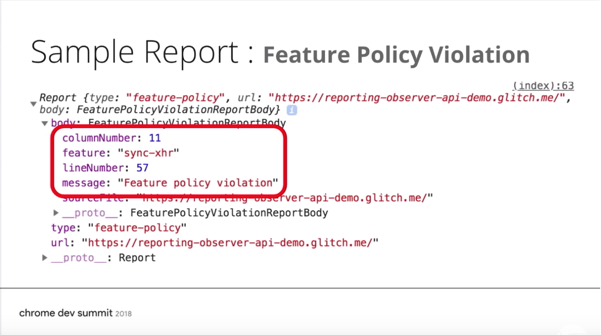
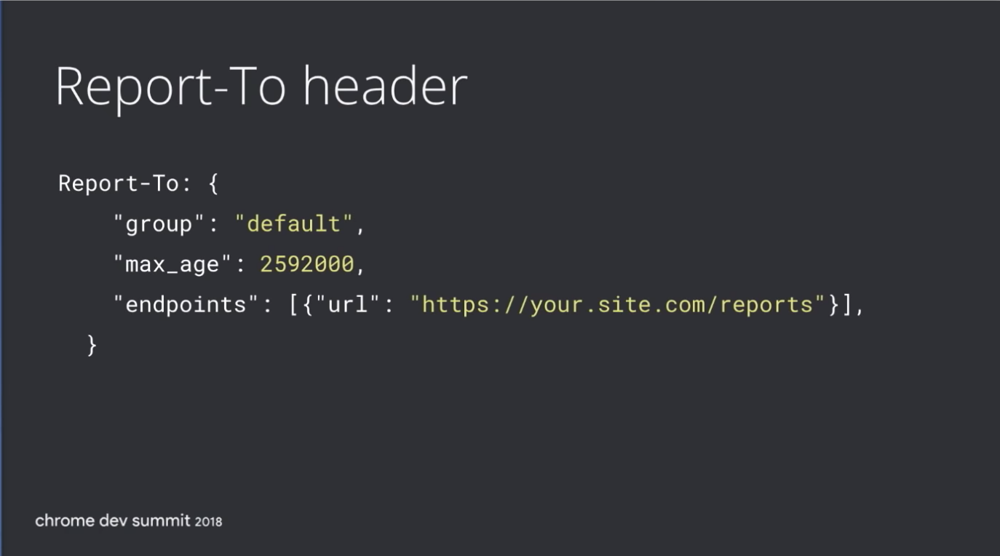
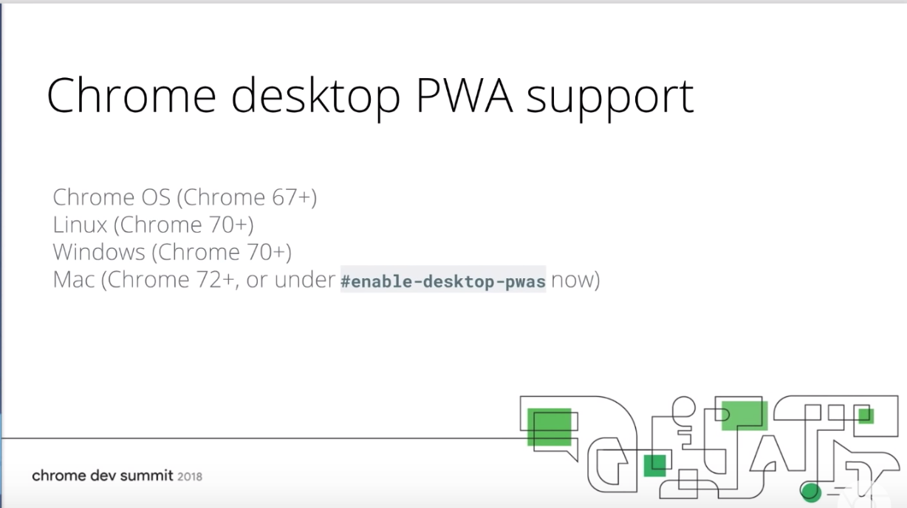

<!DOCTYPE html>
<html lang="ja">
<head>
          <title>ryoka419319 blog</title>
        <meta name="viewport" content="width=device-width, initial-scale=1" />
        <meta charset="utf-8" />
        <!-- twitter card metadata -->
<meta name="twitter:site" content="">
<meta name="twitter:title" content="Chrome Dev Summit 2018 Day2">
<meta name="twitter:description" content="">
        <!-- OG Tags -->
<meta property="og:url" content="/chrome-dev-summit-2018-day2.html"/>
<meta property="og:title" content="ryoka419319 blog | Chrome Dev Summit 2018 Day2" />
<meta property="og:description" content="" />
        <!-- favicon -->
        <!-- moment.js for date formatting -->
        <script src="/theme/js/moment.js"></script>
        <!-- css -->
        <link rel="stylesheet" type="text/css" href="/theme/css/main.css" />
		<script>
			
                /*! grunt-grunticon Stylesheet Loader - v2.1.2 | https://github.com/filamentgroup/grunticon | (c) 2015 Scott Jehl, Filament Group, Inc. | MIT license. */
    
    (function(e){function t(t,n,r,o){"use strict";function a(){for(var e,n=0;u.length>n;n++)u[n].href&&u[n].href.indexOf(t)>-1&&(e=!0);e?i.media=r||"all":setTimeout(a)}var i=e.document.createElement("link"),l=n||e.document.getElementsByTagName("script")[0],u=e.document.styleSheets;return i.rel="stylesheet",i.href=t,i.media="only x",i.onload=o||null,l.parentNode.insertBefore(i,l),a(),i}var n=function(r,o){"use strict";if(r&&3===r.length){var a=e.navigator,i=e.Image,l=!(!document.createElementNS||!document.createElementNS("http://www.w3.org/2000/svg","svg").createSVGRect||!document.implementation.hasFeature("http://www.w3.org/TR/SVG11/feature#Image","1.1")||e.opera&&-1===a.userAgent.indexOf("Chrome")||-1!==a.userAgent.indexOf("Series40")),u=new i;u.onerror=function(){n.method="png",n.href=r[2],t(r[2])},u.onload=function(){var e=1===u.width&&1===u.height,a=r[e&&l?0:e?1:2];n.method=e&&l?"svg":e?"datapng":"png",n.href=a,t(a,null,null,o)},u.src="data:image/gif;base64,R0lGODlhAQABAIAAAAAAAP///ywAAAAAAQABAAACAUwAOw==",document.documentElement.className+=" grunticon"}};n.loadCSS=t,e.grunticon=n})(this);(function(e,t){"use strict";var n=t.document,r="grunticon:",o=function(e){if(n.attachEvent?"complete"===n.readyState:"loading"!==n.readyState)e();else{var t=!1;n.addEventListener("readystatechange",function(){t||(t=!0,e())},!1)}},a=function(e){return t.document.querySelector('link[href$="'+e+'"]')},c=function(e){var t,n,o,a,c,i,u={};if(t=e.sheet,!t)return u;n=t.cssRules?t.cssRules:t.rules;for(var l=0;n.length>l;l++)o=n[l].cssText,a=r+n[l].selectorText,c=o.split(");")[0].match(/US\-ASCII\,([^"']+)/),c&&c[1]&&(i=decodeURIComponent(c[1]),u[a]=i);return u},i=function(e){var t,o,a;o="data-grunticon-embed";for(var c in e)if(a=c.slice(r.length),t=n.querySelectorAll(a+"["+o+"]"),t.length)for(var i=0;t.length>i;i++)t[i].innerHTML=e[c],t[i].style.backgroundImage="none",t[i].removeAttribute(o);return t},u=function(t){"svg"===e.method&&o(function(){i(c(a(e.href))),"function"==typeof t&&t()})};e.embedIcons=i,e.getCSS=a,e.getIcons=c,e.ready=o,e.svgLoadedCallback=u,e.embedSVG=u})(grunticon,this);
                
                grunticon(["/theme/css/icons.data.svg.css", "/theme/css/icons.data.png.css", "/theme/css/icons.fallback.css"]);
            </script>
        <noscript><link href="/theme/css/icons.fallback.css" rel="stylesheet"></noscript>
        <!-- menu toggle javascript -->
        <script type="text/javascript">
            document.addEventListener("DOMContentLoaded", initMenu);
            
            function initMenu(){
                var menu = document.getElementById("menu");
                var menulink = document.getElementById("menu-link");
                menulink.addEventListener("click", function toggleMenu(){
                        window.event.preventDefault();
                        menulink.classList.toggle('active');
                        menu.classList.toggle('active');              
                    });
            };
        </script>


    <meta name="tags" content="conference" />
    <meta name="tags" content="google" />
    <meta name="tags" content="chrome" />


<!-- Google AdSense -->
<script async src="https://pagead2.googlesyndication.com/pagead/js/adsbygoogle.js"></script>
<script>
  (adsbygoogle = window.adsbygoogle || []).push({
    google_ad_client: "ca-pub-6379280991526072",
    enable_page_level_ads: true
  });
</script>
<!--/ Google AdSense -->

<!-- Google AdSense -->
<script async src="https://pagead2.googlesyndication.com/pagead/js/adsbygoogle.js"></script>
<script>
  (adsbygoogle = window.adsbygoogle || []).push({
    google_ad_client: "ca-pub-6379280991526072",
    enable_page_level_ads: true
  });
</script>
<!--/ Google AdSense -->
</head>
<body>
    <div role="banner" id="masthead">
        <header>
            <h1><a href="/">Ryoya's Blog</a></h1>
            <a href="#menu" id="menu-link">more stuff</a>
            <nav id="menu">
                <ul>
                            <li class="active"><a href="/category/conference.html">Conference</a></li>
                </ul>
            </nav>
        </header>
    </div>
        <div class="page" role="main">
  <div class="article" role="article">
    <article>
        <footer>
            <a name="top"></a>
            <p>
              <time datetime=" 2018-11-13 00:00:00+09:00">
                <script>document.write(moment('2018-11-13 00:00:00+09:00').format('LL'));</script>
              </time>
            </p>
        </footer>
        <header>
          <h2>
            Chrome Dev Summit 2018 Day2
          </h2>
        </header>
      <div class="content">
         <h1>Chrome Dev Summit Day2</h1>
<h2>8:00~ Registration and Breakfast</h2>
<p>１日目に参加登録を行ったので、２日目は、朝食だけ食べて、
Keynote を見に行きました。</p>
<h2>10:00~ Day 2 Keynote</h2>
<p>
Web Primitives - DOM, Fetch API, Service Worker</p>
<p>Build-in modules - 高水準 API(Virtual Scroll, カルーセル)</p>
<p>Frameworks - React, Angular, Polymer, Next.js, Sapper</p>
<p>Web Components - 日付ピッカー,タブ,カルーセル</p>
<p>Web Framework によって、速度が遅くなることもあります。</p>
<h3>React</h3>
<p>

React は、レンダリングを小さなチャンクに分けて、処理を行います。</p>
<p>なので、大きなアップデートがあっても、長い時間ロックすることなく、
処理していきます。</p>
<h3>Angular</h3>
<p></p>
<p>Angular は、デフォルトでパフォーマンスバジェットに対応しました。</p>
<h3>Vue</h3>
<p></p>
<p>Vue は、モダンなコードをモダンなブラウザに提供します。</p>
<p>また、プリロード、プリフェッチをデフォルトで行います。</p>
<h3>Polymer</h3>
<p></p>
<p>Firefox にも対応したため、ネイティブ Web コンポーネントに対応しました。</p>
<h3>Svelte</h3>
<p></p>
<p>Svelte は、すでに高速に動作します。</p>
<p><a href="https://news.ycombinator.com/">Hacker News</a> のアプリは、20 KB 以下で動作します。</p>
<h3>AMP</h3>
<p></p>
<p>Brotil 圧縮アルゴリズムにより、JS サイズを 20% 削減しました。</p>
<h3>Ember</h3>
<p></p>
<p>jQuery をデフォルトから削除して、バンドルサイズを 20% 削減しました。</p>
<h3>ディスプレイロック</h3>
<p>これは、DOM セクションをロックし、OK を出すまで、
レンダリングなどは行わないようにします。</p>
<p>ただし、真っ白な画面が表示されるだけが長く続くと、
ユーザは、何が起こっているのか分かりません。</p>
<p>クロスオリジンの場合には、解決策がありません。</p>
<p>そこで Portals を使用します。</p>
<p>Portals は、高度なページ遷移を行います。</p>
<p>Feature Policies</p>
<p>「レポートオンリーモード」「強制モード」があります。</p>
<p>そこで以下の項目をチェックします。</p>
<ul>
<li>
<p>同期 XHR</p>
</li>
<li>
<p>最適化されていない画像</p>
</li>
<li>
<p>画像のサイズオーバー</p>
</li>
<li>
<p>圧縮していないメディア</p>
</li>
</ul>
<h3>インスタントローディング</h3>
<p>ユーザがクリックする前に読み込む必要があります。</p>
<p>これを WebPackaging によって解決します。</p>
<p>WebPackaging は、
証明書と一緒にドキュメントがあり、
誰でも運ぶことができ（どの CDN や BitTorrent でも）、
ブラウザは、それを信用して、表示します。</p>
<h3>Scheduling API</h3>
<p>もし、タスクを小さく分割しているなら、ブラウザと連携して、処理を行います。</p>
<h3>その他の Animation API</h3>
<p>Web Animation API は、Safari Preview でも対応されます。</p>
<p>また、CSS アニメーションは、どのブラウザでも対応されています。</p>
<p>ただ、現在のアニメーションは、時間軸でしか動作できません。</p>
<h3>Animation worklets</h3>
<p>Animation worklets では、スクロールによってアニメーションすることもできます。</p>
<h3>Virtual Scroller</h3>
<p></p>
<p>無限スクローリングでは、画像のようになります。</p>
<p>UITableView が Web にも対応されます。</p>
<h2>10:30~ Feature Policy &amp; the Well-Lit Path for Web Development</h2>
<h3>Feature Policy</h3>
<p>これは、あなたとブラウザとの契約のようなものです。</p>
<p></p>
<p>Feature policy を ON にすると、最適化されていないイメージは、ブロックされます。</p>
<p></p>
<p>レスポンスとともにポリシーを送付して、ブラウザをそれを認識します。</p>
<p>Feature policy を設定するには、まずレスポンスヘッダに以下を追加します。</p>
<div class="highlight"><pre><span></span># 元になるポリシーがない
Feature-Policy: oversized-images &#39;none&#39;

# 最適化されていない写真は、キャッチされます。
Feature-Policy: oversized-images https://cdn.photos.com
</pre></div>


<p>または、DOM 属性でも指定ができます。</p>
<div class="highlight"><pre><span></span><span class="p">&lt;</span><span class="nt">iframe</span> <span class="na">allow</span><span class="o">=</span><span class="s">&quot;autoplay&quot;</span> <span class="na">src</span><span class="o">=</span><span class="s">&quot;...&quot;</span><span class="p">&gt;</span>
</pre></div>


<p>Feature Policy は、コードが大きくなる前に組み込んだ方が良いです。</p>
<p></p>
<p>以下のようにして、Reporting API を実装できます。</p>
<p></p>
<p></p>
<p>このような形でレポートしてくれます。</p>
<p>レスポンスヘッダへのレポートは、以下のように指定します。</p>
<p></p>
<p>Contents Security Policy は、レポート API と統合します。</p>
<p></p>
<p></p>
<p>Feature Policy とレポート API は、Chrome には、入っています。</p>
<p>Firefox では、Feature Policy を実装中です。</p>
<p>Safari では、iframe の Allow 属性は、対応しています。</p>
<p>Chrome では、簡単に ON/OFF 切り替えができるように
<a href="https://chrome.google.com/webstore/detail/feature-policy-tester-dev/pchamnkhkeokbpahnocjaeednpbpacop">Feature Policy Tester DevTools Extension</a> という拡張機能を作っています。</p>
<h2>11:00~ Break</h2>
<h2>11:30~ virtual-scroller: Let there be less (DOM)</h2>
<p>より高速化を行うために virtual-scroller を紹介します。</p>
<p></p>
<h3>レンダリング</h3>
<p>n = 5 であれば、問題なく動きます。</p>
<p></p>
<p>n = 50 になると、少し遅くなります。</p>
<p></p>
<p>これが、n = 500 になるとかなり目立ちます。</p>
<p></p>
<p>n = 5000 でも virtual-scroller を使用すると、
目立たず、処理を行うことができます。</p>
<p></p>
<h3>読み込み時間</h3>
<p>
読み込み時間も virtual-scroller を使うことで
7s → 3s に短縮可能です。</p>
<h3>スクロール</h3>
<p>スクロールは、GPU によって処理されます。</p>
<h3>実装方法</h3>
<div class="highlight"><pre><span></span><span class="p">&lt;</span><span class="nt">script</span> <span class="na">type</span><span class="o">=</span><span class="s">&quot;module&quot;</span><span class="p">&gt;</span>
    <span class="kr">import</span> <span class="s1">&#39;std:virtual-scroller&#39;</span><span class="p">;</span>

    <span class="kr">const</span> <span class="nx">scroller</span> <span class="o">=</span> <span class="nb">document</span><span class="p">.</span><span class="nx">querySelector</span><span class="p">(</span><span class="s1">&#39;virtual-scroller&#39;</span><span class="p">);</span>

    <span class="nx">scroller</span><span class="p">.</span><span class="nx">updateElement</span> <span class="o">=</span> <span class="p">(</span><span class="nx">el</span><span class="p">,</span> <span class="nx">contact</span><span class="p">,</span> <span class="nx">idx</span><span class="p">)</span> <span class="p">=&gt;</span> <span class="nx">el</span><span class="p">.</span><span class="nx">src</span> <span class="o">=</span> <span class="nx">contact</span><span class="p">.</span><span class="nx">image</span><span class="p">;</span>

    <span class="nx">await</span> <span class="kd">function</span> <span class="nx">getData</span><span class="p">()</span> <span class="p">{</span>
        <span class="kr">const</span> <span class="nx">resp</span> <span class="o">=</span> <span class="nx">await</span> <span class="nx">fetch</span><span class="p">(</span><span class="s1">&#39;../contacts.json&#39;</span><span class="p">);</span>
        <span class="nx">scroller</span><span class="p">.</span><span class="nx">itemSource</span> <span class="o">=</span> <span class="nx">await</span> <span class="nx">resp</span><span class="p">.</span><span class="nx">json</span><span class="p">();</span>
    <span class="p">}</span>

    <span class="nx">getData</span><span class="p">();</span>
<span class="p">&lt;/</span><span class="nt">script</span><span class="p">&gt;</span>

<span class="p">&lt;</span><span class="nt">virtual-scroller</span><span class="p">&gt;</span>
    <span class="p">&lt;</span><span class="nt">template</span><span class="p">&gt;</span>
        <span class="p">&lt;</span><span class="nt">img</span> <span class="na">height</span><span class="o">=</span><span class="s">&quot;73&quot;</span> <span class="na">width</span><span class="o">=</span><span class="s">&quot;73&quot;</span> <span class="p">/&gt;</span>
    <span class="p">&lt;/</span><span class="nt">template</span><span class="p">&gt;</span>
<span class="p">&lt;/</span><span class="nt">virtual-scroller</span><span class="p">&gt;</span>
</pre></div>


<h2>12:00~ A Quest to Guarantee Responsiveness: Scheduling On and Off the Main Thread</h2>
<p>JS をスムーズに動かすためには、以下のガイドラインに沿った実装が必要です。</p>
<ul>
<li>
<p>10ms 以内に入力ができること</p>
</li>
<li>
<p>16ms 以内にレンダリングを行うこと（出来れば、10ms 以内）</p>
</li>
<li>
<p>100ms 以内でインタラクティブな結果を返すこと</p>
</li>
</ul>
<h3>対策</h3>
<ul>
<li>
<p>単純に処理を減らす</p>
</li>
<li>
<p>ブロッキングを避けるため、処理を分割する</p>
</li>
<li>
<p>分割した処理に優先度をつける</p>
</li>
</ul>
<h3>実装</h3>
<p>例えば、Google Map では、以下のように実装しています。</p>
<p></p>
<p>ユーザのアクションが行われると、そちらを優先して処理を行うようにしています。</p>
<h3>Task Worklet</h3>
<p></p>
<p>別スレッドで動作させることができるため、処理をシームレスに行うことができます。</p>
<p></p>
<p>Worker は、レンダリングをスムーズに出来ますが、インプットを犠牲にするかもしれないです。</p>
<h2>12:30~ Architecting Web Apps - Lights, Camera, Action!</h2>
<h3>Actor Model</h3>
<p></p>
<p>preact を使うとこのようになります。</p>
<p></p>
<p>UI 以外は、メインスレッドで動作するべきではないです。</p>
<h2>13:00~ Lunch</h2>
<h2>14:30~ From Low Friction to Zero Friction with Web Packaging and Portals</h2>
<p>AMP には、3つのレイヤーがあります。</p>
<p></p>
<p>Web 体験の摩擦を 0 にするために Web Packaging と Portals を提案しています。</p>
<h3>Web Packaging</h3>
<p></p>
<p>サーバが高負荷だったり、処理が遅いと読み込み時間が遅くなったりします。</p>
<p>これを改善するためは、プリフェッチが使えます。</p>
<p></p>
<p>これは、ユーザがそのあとアクセスしそうなページを
予めキャッシュに読み込んでおき、
いざ、ユーザがアクセスするとキャッシュからデータを返します。</p>
<p>ただ、これは、ユーザが Web サイトに訪問しなくても
ユーザの興味ついてデータを取得されます。</p>
<p>これを解決するために Referrer site をキャッシュしておき、
そのキャッシュを使って、 prefetch する方法があります。</p>
<p></p>
<p>しかし、これもどのリソースから取得しているかを保証することができません。</p>
<p>これに対応するために Web Packaging を使います。</p>
<h3>Portals</h3>
<p></p>
<p>次の話を読む際に読み込みに時間がかかります。</p>
<p>これは、別のドメインへのアクセスを行なっていることが原因です。</p>
<p></p>
<p>Portals を使うとシームレスに次の話を読み込むことができます。</p>
<p></p>
<p>Portals とは、iframe のようなものです。</p>
<p>まず、<code>&lt;portals&gt;</code> タグを埋め込み、Activate API を呼び出します。</p>
<p>この API が呼び出されると、<code>&lt;portals&gt;</code> がトップレベルページになります。</p>
<p></p>
<h3>Bundle Exchanges</h3>
<p>これは、複数のリソースを1つのパッケージにバンドルすることができます。</p>
<p>サービスワーカーがダウンロードし、記事をバンドルとして保存します。</p>
<p>その後、オフラインでも複数のサイトから保存された記事を読むことができます。</p>
<p></p>
<p>多くのリソースを読み込む際には、コストがかかります。</p>
<p>webpack は、これらに対応するための一般的な方法ですが、それにも負けないくらいの結果を残しています。</p>
<p></p>
<h2>15:00~ State of Houdini</h2>
<p>Houdini は、CSS の標準的な取り組みです。</p>
<p>4つのハイレベル API と4つのローレベル API で構成されています。</p>
<h3>ハイレベル API</h3>
<ul>
<li>
<p>Parser API</p>
</li>
<li>
<p>Painting API</p>
</li>
<li>
<p>Layout API</p>
</li>
<li>
<p>Animation Worklet API</p>
</li>
</ul>
<h3>ローレベル API</h3>
<ul>
<li>
<p>Typed OM</p>
</li>
<li>
<p>Font Metrics API</p>
</li>
<li>
<p>Worklets</p>
</li>
<li>
<p>Properties &amp; Values API</p>
</li>
</ul>
<h3>Worklets</h3>
<p>Worklets と Workers は、別のものです。</p>
<p>この円がイベントループだとすると、Workers は、こんな感じです。</p>
<p></p>
<p></p>
<p>Worklets は、イベントループをアタッチメントする感じです。</p>
<h3>CSS Paint API</h3>
<p>以下のように実装します。</p>
<p>まず、どの Worklets でも js をロードする必要があります。</p>
<div class="highlight"><pre><span></span><span class="c1">// main.js</span>
<span class="nx">await</span> <span class="nx">CSS</span><span class="p">.</span><span class="nx">paintWorklets</span><span class="p">.</span><span class="nx">addModule</span><span class="p">(</span><span class="s1">&#39;my-paint.js&#39;</span><span class="p">);</span>
</pre></div>


<div class="highlight"><pre><span></span><span class="c1">// my-paint.js</span>
<span class="nx">registerPaint</span><span class="p">(</span><span class="s1">&#39;my-paint&#39;</span><span class="p">,</span> <span class="kr">class</span> <span class="p">{</span>
    <span class="nx">paint</span><span class="p">(</span><span class="nx">ctx</span><span class="p">,</span> <span class="nx">geometry</span><span class="p">,</span> <span class="nx">properties</span><span class="p">)</span> <span class="p">{</span>
        <span class="nx">ctx</span><span class="p">.</span><span class="nx">fillStyle</span> <span class="o">=</span> <span class="s1">&#39;hotpink&#39;</span><span class="p">;</span>
        <span class="nx">ctx</span><span class="p">.</span><span class="nx">arc</span><span class="p">(</span>
            <span class="nx">geometry</span><span class="p">.</span><span class="nx">width</span> <span class="o">/</span> <span class="mi">2</span><span class="p">,</span> <span class="nx">geometry</span><span class="p">.</span><span class="nx">height</span> <span class="o">/</span> <span class="mi">2</span><span class="p">,</span> <span class="c1">// center</span>
            <span class="nb">Math</span><span class="p">.</span><span class="nx">min</span><span class="p">(</span><span class="nx">geometry</span><span class="p">.</span><span class="nx">width</span><span class="p">,</span> <span class="nx">geometry</span><span class="p">.</span><span class="nx">height</span><span class="p">)</span> <span class="o">/</span> <span class="mi">2</span><span class="p">,</span> <span class="c1">// radius</span>
            <span class="mi">0</span><span class="p">,</span> <span class="mi">2</span> <span class="o">*</span> <span class="nb">Math</span><span class="p">.</span><span class="nx">PI</span> <span class="c1">// full circle</span>
        <span class="p">);</span>
        <span class="nx">ctx</span><span class="p">.</span><span class="nx">fill</span><span class="p">();</span>
    <span class="p">}</span>
<span class="p">})</span>
</pre></div>


<div class="highlight"><pre><span></span><span class="c">&lt;!-- index.html --&gt;</span>
<span class="p">&lt;</span><span class="nt">style</span><span class="p">&gt;</span>
    <span class="nt">textarea</span> <span class="p">{</span>
        <span class="k">background-image</span><span class="p">:</span> <span class="nf">paint</span><span class="p">(</span><span class="n">my</span><span class="o">-</span><span class="n">paint</span><span class="p">);</span>
    <span class="p">}</span>
<span class="p">&lt;/</span><span class="nt">style</span><span class="p">&gt;</span>
</pre></div>


<p>この API をサポートしているかどうかは、以下のようにして確認できます。</p>
<div class="highlight"><pre><span></span><span class="p">&lt;</span><span class="nt">style</span><span class="p">&gt;</span>
    <span class="p">@</span><span class="k">supports</span> <span class="o">(</span><span class="nt">background-image</span><span class="o">:</span> <span class="nt">paint</span><span class="o">(</span><span class="nt">something</span><span class="o">))</span> <span class="p">{</span>
        <span class="c">/* Paint Worklet is supported */</span>
    <span class="p">}</span>
<span class="p">&lt;/</span><span class="nt">style</span><span class="p">&gt;</span>
</pre></div>


<div class="highlight"><pre><span></span><span class="k">if</span> <span class="p">(</span><span class="s2">&quot;paintWorklet&quot;</span> <span class="k">in</span> <span class="nx">CSS</span><span class="p">)</span> <span class="p">{</span>
    <span class="c1">// Paint Worklet is supported</span>
<span class="p">}</span>
</pre></div>


<h3>Animation Worklet API</h3>
<p></p>
<p>通常のアニメーション API です。</p>
<p></p>
<p>これが、Animation Worklet API です。</p>
<p>以下のようにして使います。</p>
<div class="highlight"><pre><span></span><span class="c1">// main.js</span>
<span class="nx">await</span> <span class="nx">CSS</span><span class="p">.</span><span class="nx">paintWorklets</span><span class="p">.</span><span class="nx">addModule</span><span class="p">(</span><span class="s1">&#39;my-animation.js&#39;</span><span class="p">);</span>
</pre></div>


<div class="highlight"><pre><span></span><span class="c1">// my-animation.js</span>
<span class="nx">registerAnimator</span><span class="p">(</span><span class="s1">&#39;my-animation&#39;</span><span class="p">,</span> <span class="kr">class</span> <span class="p">{</span>
    <span class="nx">animate</span><span class="p">(</span><span class="nx">currentTime</span><span class="p">,</span> <span class="nx">effect</span><span class="p">)</span> <span class="p">{</span>
        <span class="nx">efect</span><span class="p">.</span><span class="nx">localTime</span> <span class="o">=</span> <span class="nx">curentTime</span><span class="p">;</span>
    <span class="p">}</span>
<span class="p">});</span>
</pre></div>


<p>Safari は、spring timing 機能を提案しましたが、他のブラウザは、実装していないです。</p>
<div class="highlight"><pre><span></span><span class="p">&lt;</span><span class="nt">style</span><span class="p">&gt;</span>
<span class="p">.</span><span class="nc">selector</span> <span class="p">{</span>
    <span class="c">/* ... */</span>
    <span class="k">animation-timing-function</span><span class="p">:</span> <span class="nf">spring</span><span class="p">(</span><span class="c">/*...*/</span><span class="p">);</span>
<span class="p">}</span>
<span class="p">&lt;/</span><span class="nt">style</span><span class="p">&gt;</span>
</pre></div>


<p>バウンズアニメーションを行う際は、以下のようにします。</p>
<p></p>
<p></p>
<h3>CSS Layout API</h3>
<div class="highlight"><pre><span></span><span class="p">&lt;</span><span class="nt">main</span> <span class="na">style</span><span class="o">=</span><span class="s">&quot;display: layout(random)&quot;</span><span class="p">&gt;</span>
    <span class="p">&lt;</span><span class="nt">div</span><span class="p">&gt;&lt;/</span><span class="nt">div</span><span class="p">&gt;</span>
    <span class="p">&lt;</span><span class="nt">div</span><span class="p">&gt;&lt;/</span><span class="nt">div</span><span class="p">&gt;</span>
    <span class="c">&lt;!-- ... --&gt;</span>
<span class="p">&lt;/</span><span class="nt">main</span><span class="p">&gt;</span>

<span class="p">&lt;</span><span class="nt">script</span><span class="p">&gt;</span>
    <span class="nx">CSS</span><span class="p">.</span><span class="nx">layoutWorklet</span><span class="p">.</span><span class="nx">addModule</span><span class="p">(</span><span class="s2">&quot;random.js&quot;</span><span class="p">);</span>
<span class="p">&lt;/</span><span class="nt">script</span><span class="p">&gt;</span>
</pre></div>


<div class="highlight"><pre><span></span><span class="nx">registerLayout</span><span class="p">(</span><span class="s1">&#39;random&#39;</span><span class="p">,</span> <span class="kr">class</span> <span class="p">{</span>
    <span class="nx">async</span> <span class="nx">layout</span><span class="p">(</span><span class="nx">children</span><span class="p">,</span> <span class="nx">edges</span><span class="p">,</span> <span class="nx">constraints</span><span class="p">,</span> <span class="nx">styleMap</span><span class="p">)</span> <span class="p">{</span>
        <span class="kr">const</span> <span class="nx">childFragments</span> <span class="o">=</span> <span class="p">[];</span>
        <span class="k">for</span><span class="p">(</span><span class="kr">const</span> <span class="nx">child</span> <span class="k">of</span> <span class="nx">children</span><span class="p">)</span> <span class="p">{</span>
            <span class="kr">const</span> <span class="nx">childFragment</span> <span class="o">=</span> <span class="nx">await</span> <span class="nx">child</span><span class="p">.</span><span class="nx">layout</span><span class="p">();</span>
            <span class="nx">childFragment</span><span class="p">.</span><span class="nx">inlineOffset</span> <span class="o">=</span>
                <span class="nb">Math</span><span class="p">.</span><span class="nx">randon</span><span class="p">()</span> <span class="o">*</span> <span class="nx">contraintSpace</span><span class="p">.</span><span class="nx">fixedInlineSize</span><span class="p">;</span>
            <span class="nx">childFragment</span><span class="p">.</span><span class="nx">blockOffset</span> <span class="o">=</span>
                <span class="nb">Math</span><span class="p">.</span><span class="nx">random</span><span class="p">()</span> <span class="o">*</span> <span class="nx">constraintSpace</span><span class="p">.</span><span class="nx">fixedBlockSize</span><span class="p">;</span>
            <span class="nx">childFragments</span><span class="p">.</span><span class="nx">push</span><span class="p">(</span><span class="nx">childFragment</span><span class="p">);</span>
        <span class="p">}</span>
        <span class="k">return</span> <span class="p">{</span> <span class="nx">childFragments</span> <span class="p">};</span>
    <span class="p">}</span>
<span class="p">})</span>
</pre></div>


<h2>15:30~ Building Engaging Immersive Experiences</h2>
<p>Daydream(VR) ユーザの 83% は、Chome VRBrowser で Web を使用しています。</p>
<h3>WebXR Device API</h3>
<p>WebVR API から置き換えられたもので、
AR を使用した Web アプリケーションを作ることができます。</p>
<p>試したい場合は、以下のフラグを立てることで実験できます。</p>
<ul>
<li>
<p>chrome://flags/#webxr</p>
</li>
<li>
<p>chrome://flags/#webxr-hit-test</p>
</li>
</ul>
<h3>WebXR Polyfill</h3>
<p>これは、js ライブラリでモバイルデバイスやダンボールの VR でも使えます。</p>
<h3>AR</h3>
<p></p>
<p>左側のは、ユーザが製品について知ることができます。</p>
<p>右側のは、様々な角度から商品を見ることができます。</p>
<h3>Web 3D 実装方法</h3>
<p>three.js - Web 3D のためのヘルパーライブラリです。</p>
<p></p>
<p></p>
<p>現実世界の座標を仮想世界にロックします。</p>
<p></p>
<p></p>
<p><a href="github.com/GoogleWebComponents/model-viewer">model-viewer</a> で試すことができます。</p>
<ul>
<li>
<p>3D モデルを 3D プログラミングなしで使用できること</p>
</li>
<li>
<p>各ブラウザ・各デバイスに対応すること</p>
</li>
<li>
<p>自動で改善していくこと</p>
</li>
</ul>
<p></p>
<p></p>
<p></p>
<h2>16:00~ Break</h2>
<h2>16:30~ Using WebAssembly and Threads</h2>
<p>WebAssembly は、Web の新しい言語で JS のロジックを書くことができます。
（ただし、完全に書き換えられるわけではないです。）</p>
<p>C++ などの Web アプリケーションを作成し、WebAssembly にコンパイルします。</p>
<p>また、主要なブラウザでは、サポートされています。</p>
<p>WebAssembly には、次の特徴があります。</p>
<ul>
<li>
<p>最大限の信頼性の高いパフォーマンスを発揮します。</p>
</li>
<li>
<p>高い移植性</p>
</li>
<li>
<p>高い柔軟性</p>
</li>
</ul>
<p>今までは、コンパイルするためには、部分的に送られてくるデータを取得しきってから、
コンパイルしないといけなかったです。</p>
<p>しかし、Streaming Compilation では、部分的に送られてくるデータを
それぞれ、コンパイルすることができます。</p>
<p></p>
<p>WebAssembly + Emscripten を使うことで、Web でアプリケーションを実行できるようになります。</p>
<p></p>
<p>workers は、postMessage() によって、やり取りできます。</p>
<h2>17:00~ The Virtue of Laziness: Leveraging Incrementality for Faster Web UI</h2>
<p>Web Component を使用すると独自の HTML タグを作ることができます。</p>
<p></p>
<p>lit-html は、HTML テンプレートを JS で書くことができます。</p>
<p></p>
<p>LitElement は、Web Component を記述するのに便利な方法です。</p>
<p>LitElement は、常に非同期です。</p>
<p></p>
<p></p>
<p>コンポーネントツリーが左のようにあるとすると、まず A が実行されます。</p>
<p>すると、B、C がキューに入り、次に B が入ります。</p>
<p>このようにして、実行されていき、全て実行されるとブラウザに表示されます。</p>
<div class="highlight"><pre><span></span><span class="kr">const</span> <span class="nx">content</span> <span class="o">=</span> <span class="nx">fetch</span><span class="p">(</span><span class="s1">&#39;./content.txt&#39;</span><span class="p">);</span>
<span class="kr">class</span> <span class="nx">DemoElement</span> <span class="kr">extends</span> <span class="nx">LitElement</span> <span class="p">{</span>
    <span class="nx">render</span><span class="p">()</span> <span class="p">{</span>
        <span class="k">return</span> <span class="nx">html</span><span class="sb">`</span>
<span class="sb">        &lt;p</span><span class="si">${</span><span class="nx">content</span><span class="si">}</span><span class="sb">&lt;/p&gt;</span>
<span class="sb">        `</span><span class="p">;</span>
    <span class="p">}</span>
<span class="p">}</span>
</pre></div>


<p>もし、ネットワークから文字列を取得して、画面へ表示する場合は、
最初は、真っ白な画面が表示されます。</p>
<p>その後、必要なデータの取得ができ次第、画面に表示されます。</p>
<p>もし、この真っ白な画面を表示したくない場合は、<code>until()</code> を使用してください。</p>
<div class="highlight"><pre><span></span><span class="kr">const</span> <span class="nx">content</span> <span class="o">=</span> <span class="nx">fetch</span><span class="p">(</span><span class="s1">&#39;./content.txt&#39;</span><span class="p">);</span>
<span class="kr">class</span> <span class="nx">DemoElement</span> <span class="kr">extends</span> <span class="nx">LitElement</span> <span class="p">{</span>
    <span class="nx">render</span><span class="p">()</span> <span class="p">{</span>
        <span class="k">return</span> <span class="nx">html</span><span class="sb">`</span>
<span class="sb">        &lt;p</span><span class="si">${</span><span class="nx">until</span><span class="p">(</span><span class="nx">content</span><span class="p">,</span> <span class="s1">&#39;Loading...&#39;</span><span class="p">)</span><span class="si">}</span><span class="sb">&lt;/p&gt;</span>
<span class="sb">        `</span><span class="p">;</span>
    <span class="p">}</span>
<span class="p">}</span>
</pre></div>


<p><code>runSync</code> は、データが変更された時だけ、非同期で処理が行われます。</p>
<div class="highlight"><pre><span></span><span class="kr">class</span> <span class="nx">DemoElement</span> <span class="kr">extends</span> <span class="nx">LitElement</span> <span class="p">{</span>
    <span class="err">@</span><span class="nx">property</span><span class="p">()</span>
    <span class="nx">filename</span><span class="p">;</span>
    <span class="nx">render</span><span class="p">()</span> <span class="p">{</span>
        <span class="k">return</span> <span class="nx">html</span><span class="sb">`</span>
<span class="sb">        &lt;p</span><span class="si">${</span><span class="nx">fetchContent</span><span class="p">(</span><span class="k">this</span><span class="p">.</span><span class="nx">filename</span><span class="p">,</span>
        <span class="p">(</span><span class="nx">content</span><span class="p">)</span> <span class="p">=&gt;</span> <span class="nx">html</span><span class="sb">`content: </span><span class="si">${</span><span class="nx">content</span><span class="si">}</span><span class="sb">`</span>
        <span class="p">)</span><span class="si">}</span><span class="sb"></span>
<span class="sb">        &lt;/p&gt;</span>
<span class="sb">        `</span><span class="p">;</span>
    <span class="p">}</span>
<span class="p">}</span>
</pre></div>


<h2>17:30~ Chrome OS: Ready for Web Development</h2>
<p>開発に Chrome OS を使用する理由は2つあります。</p>
<ol>
<li>
<p>Chrome OS は、PWA にもサポートしていて、最新の技術が集まっていること</p>
</li>
<li>
<p>Android アプリも実行することができること</p>
</li>
</ol>
<p>Chrome OS は、次の2つを特徴としています。</p>
<ul>
<li>
<p>Simplicity</p>
</li>
<li>
<p>Speed</p>
</li>
<li>
<p>Security</p>
</li>
</ul>
<p>Chrome OS は、Linux システムのようなもので、</p>
<ul>
<li>
<p>Debian 安定板を基にしています。</p>
</li>
<li>
<p>Web 開発者をターゲットにしています。</p>
<p>localhost にポートフォワーディングします</p>
<p>DNS のエイリアスとして、penguin.linux.test があります</p>
</li>
<li>
<p>今後のリリースで USB, GPU, audio, FUSE, file system を共有します。</p>
</li>
</ul>
<h3>Crostini</h3>
<ul>
<li>
<p>開発者がローカルでする必要があることは、すべてできます。</p>
</li>
<li>
<p>開発中だが、ほとんどの Linux アプリを実行できるようにします。</p>
</li>
<li>
<p>エディタ、IDE、DB、ローカルサーバを実行できます。</p>
</li>
<li>
<p>apt でインストールできます。</p>
</li>
</ul>
<p></p>
<p></p>
<h2>web.dev の紹介</h2>
<p><a href="https://www.youtube.com/watch?v=a6pLdPnDvb8&amp;index=28&amp;list=PLNYkxOF6rcIDjlCx1PcphPpmf43aKOAdF">Youtube ページ</a></p>
      </div>
      <div class="back-to-top">
          <a href="#top">back to top</a>
      </div>
    </article>
  </div>
<!-- end article -->
                <footer>
                    <div class="icons">
                    </div>
                    <p>© <script>document.write(moment().format('YYYY'));</script> ryoka419319</p>
                </footer>
        </div>
</body>
</html>